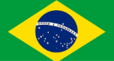

Brasil
Alemanha
Argentina
Bélgica
Uruguai
Seleção do Brasil
Formada em 1915 e considerada um dos maiores símbolos do país, é chamada de "Seleção", "Seleção Canarinho", "Verde-Amarela", além de outras alcunhas. É a seleção mais bem-sucedida da história do futebol mundial, sendo o recordista em conquistas em Copas do Mundo, com cinco títulos invictos (1958, 1962, 1970, 1994 e 2002) e quatro Copa das Confederações FIFA (1997, 2005, 2009 e 2013).
